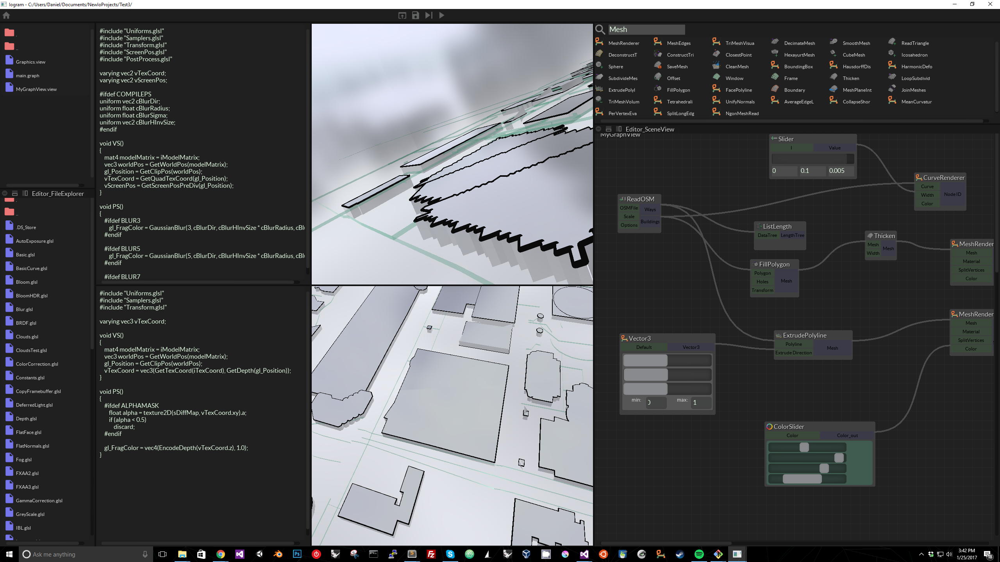
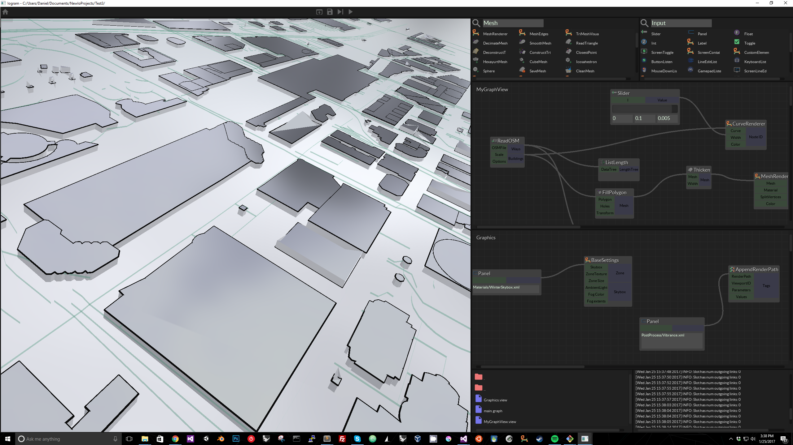
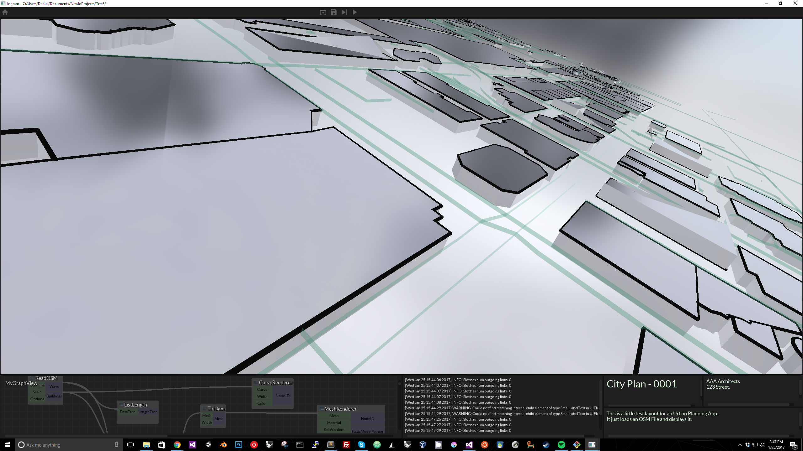

godan
Finally I have emerged from the total chaos of a major refactor…I absolutely hate that feeling of ripping apart working code…But I also love the feeling of better architecture…so…
In any case, here is a preview of the new Iogram Editor, complete with modular windows, multiple views, sketching tool ( @Lumak used your DrawTool here…), MultiLineEdit…


